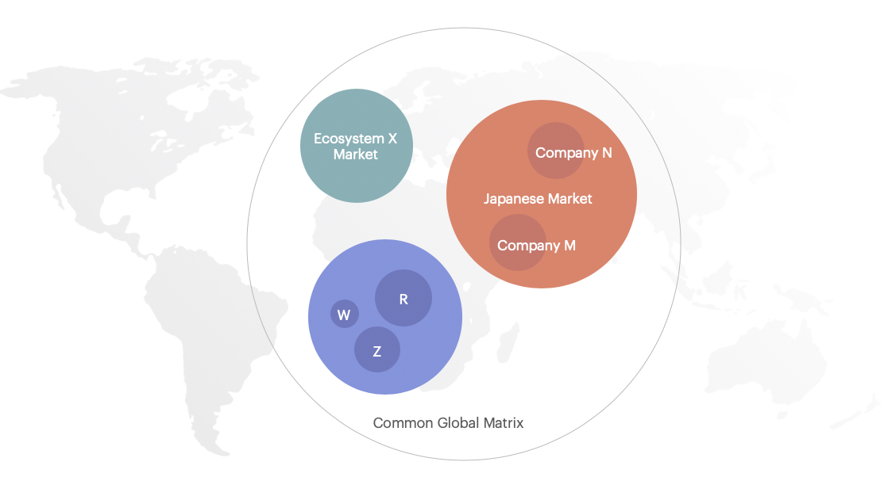
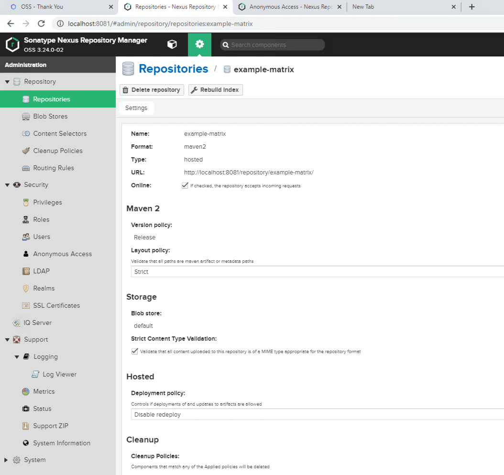
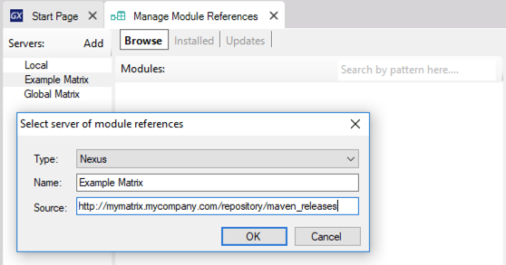

A Modules server is a repository of packaged and shared modules. Packaged modules can be shared through the file system or a Repository Manager. A repository manager that stores packaged modules (see Modules Distribution in GeneXus) is also called a GeneXus Knowledge Matrix, due to its feature of storing assets with knowledge; it will be called this way, or simply as Matrix, in this documentation. Features of a MatrixA Matrix, as a repository manager, stores assets, handles versioning of those assets, and also dependency management among versions of different assets. It holds those assets in order to share them among GeneXus users; that is, members of a project's team, a company, an ecosystem, a region in the world or even to share those assets globally with the whole GeneXus community.  Create your MatrixYou can use Nexus Repository OSS as a repository manager for this. Follow the steps below: 1) Install Nexus OSS The main options to install Nexus are:
2) Once installed, create a maven hosted repository. You can also use the already built-in 'maven-releases' repository.  3) Configure your Nexus to allow anonymous access for browsing and downloading assets. Prepare your GeneXus installation to publish assets1) Download Maven and install it. 2) Define credentials for Publishing. You need the credentials of a user who has permission to publish on the Matrix. Create or modify the following file: %USERPROFILE%\.m2\settings.xml. The credentials defined in that file will be used when you publish your modules on that Matrix.
<settings>
<servers>
<server>
<id>Example Matrix</id>
<username>Me</username>
<password>MyPassword</password>
</ server>
</ servers>
</ settings>
3) Define a new server of module references in GeneXus as explained in the next section.Define a Matrix in GeneXusTo do so, go to the GeneXus Menu > Knowledge Manager> Manage Module References, then click on 'Add'
 Publish a module to the MatrixRefer to Package and Publish Modules Install assets of a MatrixRefer to Manage Module References for more information related to installing and managing packaged modules. Predefined Modules ServersThese module servers are predefined when installing GeneXus: LocalThis server shows the modules that are available in your GeneXus installation. Typically, it holds the modules that are installed by the GeneXus Setup. Global MatrixIts purpose is to be a repository for modules shared all over the world with the whole GeneXus community.
|